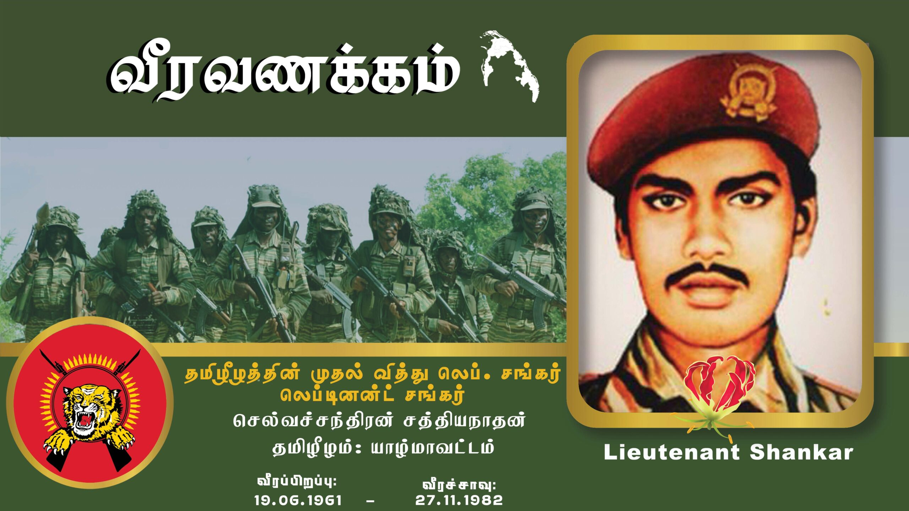

லெப். சங்கர் அவர்களின் வீர வரலாறு

உண்மைப் பெயர்: சத்தியநாதன் நாதன்
இயக்கப் பெயர் / காடர்பெயர்: லெப். சங்கர் (சுரேஸ்)
பிறந்த தேதி: 10.05.1960
வீரச்சாவு தேதி: 27.11.1982
வீரச்சாவடைந்த இடம்: நாவலர் வீதி, யாழ்ப்பாணம்
சொந்த இடம் / பிறப்பிடம்: பருத்தித்துறை, யாழ்ப்பாணம்
வரலாற்றுக்குறிப்பு (Biography)
தமிழீழ விடுதலைப் போராட்ட வரலாற்றில் முதன்முதலாகத் தாய்நாட்டின் விடியலுக்காகத் தனது இன்னுயிரை ஈந்த பெருமைக்குரியவர் லெப்டினன்ட் சங்கர் ஆவார். இவர் தலைவர் பிரபாகரன் அவர்களின் மிக நெருங்கிய தளபதியாகவும், ஆரம்பகாலப் போராளியாகவும் களமாடினார். யாழ்ப்பாணத்தில் ஸ்ரீலங்கா படைகளுடனான எதிர்பாராத மோதலின் போது படுகாயமடைந்து, பின்னர் தமிழீழத் தேசியத் தலைவரின் மடியில் வைத்து வீரச்சாவடைந்தார். இவரது வீரச்சாவடைந்த நாளான நவம்பர் 27 ஆம் திகதியே ஆண்டுதோறும் தமிழீழத்தின் உன்னத நாளான "மாவீரர் நாள்" ஆக உலகெங்கும் வாழும் தமிழ் மக்களால் தாயக உணர்வோடு நினைவுகூரப்படுகிறது.
← முகப்புப் பக்கத்திற்குச் செல்ல